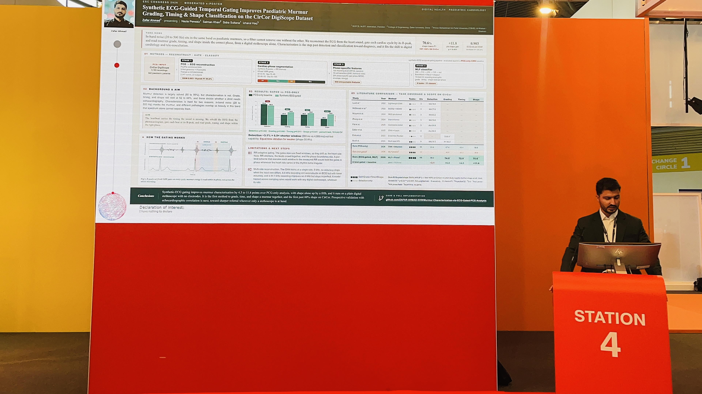

Cardiovascular research
ECG–PCG coupling, murmur characterisation and wearable biosignatures. Research methods, publications and the questions I want to pursue in a PhD.
Explore the research portfolioResearcher · Signal-processing engineer
I’m Zafar Ahmad. I study how the heart’s electrical activity relates to its sounds and mechanical responses, and build practical tools for audio, acoustics and sensing.

Three connected directions
ECG–PCG coupling, murmur characterisation and wearable biosignatures. Research methods, publications and the questions I want to pursue in a PhD.
Explore the research portfolioAudio restoration, acoustic measurement, compact classifiers and signal-driven tools. Selected projects explain the problem, method and delivered work.
Explore the engineering portfolioA venture in development, connecting practical signal-processing services with cardiovascular research. A clear account of the work today and the next steps.
Meet the ventureMy background
My work began with paediatric heart-sound collection in hospitals and schools in Pakistan. That experience shaped an interest in the physiology behind a recording and the decisions an algorithm should support.
Today I work on multimodal cardiac modelling with collaborators at Qatar University and lead technical work on a wearable research platform at NUST. Alongside research, I develop audio and acoustic analysis workflows in Python and MATLAB.
Selected work
My thesis and ongoing journal revisions connect cross-modal signal reconstruction with phase-aware murmur analysis, with particular attention to patient-level evaluation and transfer between recording systems.
A restoration and diagnostic workflow combining classical processing, speech-enhancement models and documented uncertainty.
Time-aligned acquisition, embedded sensor integration and research-team coordination for the CAREON platform.
Open to PhD opportunities in cardiovascular digital health, research collaborations and audio/signal-processing projects.